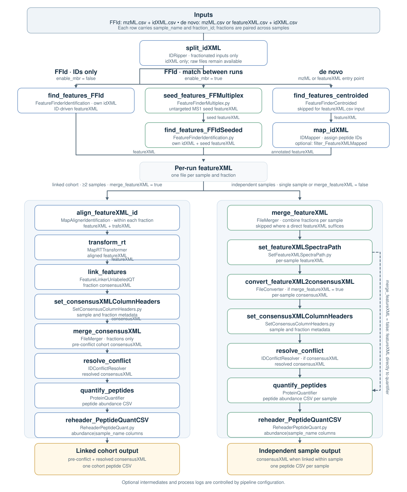

Label-free quantitation
OpenMS FeatureFinderIdentification extracts MS1 peptide features guided by accepted identifications. Alignment and feature linking then connect corresponding features across samples.

Open the original flowchart at full size.

How it works
- Match each sample's validated identifications to its acquisition fractions.
- Extract and quantify identification-guided chromatographic features with FFId.
- Align retention times and link corresponding features across samples within each fraction.
- If enabled, use untargeted multiplex features as seeds for match between runs.
- Combine fraction maps, resolve conflicting peptide assignments, and provide the final consensusXML to protein quantitation.
Inputs and outputs
The pipeline supplies validated idXML and sample/fraction mzML manifests automatically. LFQ requires matching fraction IDs across samples. The final output is a cohort *_IDConflictResolver.consensusXML; SpectroMesa-DDA also publishes a manifests/protein-cohort.consensusXML handoff. An LFQ-stage peptide table is also published. The final protein and peptide abundance tables using the selected protein groups come from the following protein quantitation step.
Keep the merged feature output
merge_featureXML is already true. Keep it true so the following protein quantitation step receives one final cohort feature map.
The launched LFQ template enables save_intermediate_files, although the standalone default is false. Turn it off when you do not need those extra published files.
Match between runs is off by default. Enabling enable_mbr requires FFId, at least two samples, and merged feature maps. It changes the evidence used to quantify features and should be evaluated on representative samples.
The reference also records the standalone de novo feature-finding options. The guide uses FFId; settings specific to de novo detection do not alter FFId results.
Parameter reference
Use the quantitate_ProteomicLFQ block inside params. Defaults below describe this step as launched by SpectroMesa-DDA. “Not set; tool default” means no override is passed. Automatically supplied values do not need to be repeated.
Analysis settings
| Parameter | Type | Default / supplied value | Meaning |
|---|---|---|---|
algorithm |
Text | FFId | LFQ algorithm. FFId is the documented default; the standalone pipeline also offers de novo feature finding. |
enable_mbr |
Boolean | false | Enable QT match between runs in the FFId workflow. |
featureXML_csv |
Path | Not supplied | Standalone featureXML input manifest; not needed for the documented FFId route. |
featureXML_entrypoint |
Boolean | false | Start the standalone de novo route from featureXML. Keep false for this acquisition-based workflow. |
ffmultiplex_intensity_threshold |
Number | 10000.0 | Minimum MS1 peak intensity for untargeted seed detection. |
ffmultiplex_max_charge |
Integer | 5 | Maximum seed charge. |
ffmultiplex_min_charge |
Integer | 2 | Minimum seed charge. |
filter_mapped_features |
Boolean | false | Remove features already associated with identifications in the de novo route. Does not configure the default FFId route. |
find_features_centroided_algorithm_isotopic_pattern_mz_tolerance |
Number | 0.005 | m/z tolerance for matching peaks to an isotope pattern, in Da. |
find_features_centroided_algorithm_mass_trace_mz_tolerance |
Number | 0.004 | Allowed m/z deviation within an MS1 mass trace, in Da. |
mbr_seed_detector |
Text | multiplex | Seed detector for FFId MBR; only multiplex is currently supported. |
merge_featureXML |
Boolean | true | Combine sample feature maps for protein quantitation. Keep true for an end-to-end analysis. |
protein_quantifier_fractions_aggregate |
Text | sum | Combine fractions within each assay: sum adds them; best selects the best fraction per peptide and fraction group. |
save_intermediate_files |
Boolean | true | Publish additional intermediate files for inspection. Final outputs and execution logs are retained independently. |
Software and containers
| Parameter | Type | Default / supplied value | Meaning |
|---|---|---|---|
docker_image_openms |
Text | ghcr.io/theboutroslab/openms-thirdparty:3.6.0 | Container image for openms. Change only to a compatible image. |
docker_image_pyopenms |
Text | ghcr.io/theboutroslab/pyopenms:3.6.0 | Container image for pyopenms. Change only to a compatible image. |
openms_version |
Text | 3.6.0 | Version used for output labeling and default container selection. |
pyopenms_version |
Text | 3.6.0 | Version used for output labeling and default container selection. |
Automatically supplied settings
| Parameter | Type | Default / supplied value | Meaning |
|---|---|---|---|
fractionated |
Boolean | Detected from the acquisition CSV | Process corresponding acquisition fractions. Set automatically from the input CSV. |
idXML_csv |
Path | Generated validated-identification manifest | Sample level idXML input table. |
mzML_csv |
Path | Generated sample/fraction manifest | mzML input table for FFId and de novo mzML entry point. |
output_dir |
Path | Assigned within the analysis output | Destination for this step. Set the shared output_dir for the complete analysis. |
project_name |
Text | Shared dataset_id | Project name used in output paths. |
Retention-time alignment
| Parameter | Type | Default / supplied value | Meaning |
|---|---|---|---|
align_featureXML_id_algorithm_auto_reference |
Text | consensus | How alignment selects its reference; this workflow uses a consensus reference by default. |
align_featureXML_id_algorithm_min_run_occur |
Integer | Not set; tool default | Minimum number of runs (incl. reference, if any) in which a peptide must occur to be used for the alignment. |
align_featureXML_id_algorithm_min_score |
Number | Not set; tool default | Minimum score for an ID to be considered. Applies to the last score calculated. |
align_featureXML_id_algorithm_score_cutoff |
Boolean | Not set; tool default | If only IDs above a score cutoff should be used. Used together with min_score. |
align_featureXML_id_design |
Path | Not set; tool default | Input file containing the experimental design (valid formats: 'tsv') |
align_featureXML_id_reference_file |
Path | Not set; tool default | File to use as reference (valid formats: 'featureXML', 'consensusXML', 'idXML') |
align_featureXML_id_reference_index |
Integer | Not set; tool default | Use one of the input files as reference ('1' for the first file, etc.). |
Resolving identification conflicts
| Parameter | Type | Default / supplied value | Meaning |
|---|---|---|---|
conflict_resolver_resolve_between_features |
Text | Not set; tool default | Resolve competing peptide assignments between features as well as within each feature. |
De novo feature detection
| Parameter | Type | Default / supplied value | Meaning |
|---|---|---|---|
find_features_centroided_algorithm_feature_max_intersection |
Number | Not set; tool default | Maximum overlap tolerated between detected features. |
find_features_centroided_algorithm_feature_max_rt_span |
Number | Not set; tool default | Maximum feature retention-time span relative to the fitted model. |
find_features_centroided_algorithm_feature_min_isotope_fit |
Number | Not set; tool default | Minimum agreement with the expected isotope distribution. |
find_features_centroided_algorithm_feature_min_rt_span |
Number | Not set; tool default | Minimum feature retention-time span relative to the fitted model. |
find_features_centroided_algorithm_feature_min_score |
Number | Not set; tool default | Minimum overall feature quality score. |
find_features_centroided_algorithm_feature_min_trace_score |
Number | Not set; tool default | Minimum quality of the fitted chromatographic mass trace. |
find_features_centroided_algorithm_feature_reported_mz |
Text | Not set; tool default | Method used to report the feature m/z. |
find_features_centroided_algorithm_feature_rt_shape |
Text | Not set; tool default | Chromatographic peak shape used for feature fitting. |
find_features_centroided_algorithm_fit_max_iterations |
Integer | Not set; tool default | Maximum iterations used to fit a feature model. |
find_features_centroided_algorithm_intensity_bins |
Integer | Not set; tool default | Number of intensity bins used to estimate feature intensity. |
find_features_centroided_algorithm_isotopic_pattern_abundance_12C |
Number | Not set; tool default | Carbon-12 abundance assumed for isotope-pattern calculations. |
find_features_centroided_algorithm_isotopic_pattern_abundance_14N |
Number | Not set; tool default | Nitrogen-14 abundance assumed for isotope-pattern calculations. |
find_features_centroided_algorithm_isotopic_pattern_charge_high |
Integer | Not set; tool default | Highest charge state considered during isotope-pattern detection. |
find_features_centroided_algorithm_isotopic_pattern_charge_low |
Integer | Not set; tool default | Lowest charge state considered during isotope-pattern detection. |
find_features_centroided_algorithm_isotopic_pattern_intensity_percentage |
Number | Not set; tool default | Required proportion of the theoretical isotope-pattern intensity. |
find_features_centroided_algorithm_isotopic_pattern_intensity_percentage_optional |
Number | Not set; tool default | Minimum theoretical intensity for optional isotope peaks. |
find_features_centroided_algorithm_isotopic_pattern_mass_window_width |
Number | Not set; tool default | Mass-window width used to calculate isotope distributions. |
find_features_centroided_algorithm_isotopic_pattern_optional_fit_improvement |
Number | Not set; tool default | Required improvement when including optional isotope peaks. |
find_features_centroided_algorithm_mass_trace_max_missing |
Integer | Not set; tool default | Maximum consecutive missing observations tolerated in a mass trace. |
find_features_centroided_algorithm_mass_trace_min_spectra |
Integer | Not set; tool default | Minimum consecutive spectra supporting a mass trace. |
find_features_centroided_algorithm_mass_trace_slope_bound |
Number | Not set; tool default | Allowed change in mass-trace intensity between neighboring scans. |
find_features_centroided_algorithm_seed_min_score |
Number | Not set; tool default | Minimum quality score for a feature seed. |
find_features_centroided_algorithm_user_seed_min_score |
Number | Not set; tool default | Minimum score for a feature generated from a supplied seed. |
find_features_centroided_algorithm_user_seed_mz_tolerance |
Number | Not set; tool default | m/z tolerance around a supplied seed. |
find_features_centroided_algorithm_user_seed_rt_tolerance |
Number | Not set; tool default | Retention-time tolerance around a supplied seed. |
Identification-guided feature detection
| Parameter | Type | Default / supplied value | Meaning |
|---|---|---|---|
find_features_ident_EMGScoring_init_mom |
Boolean | Not set; tool default | Initialize the elution-model fit from distribution moments. |
find_features_ident_EMGScoring_max_iteration |
Integer | Not set; tool default | Maximum number of iterations for EMG fitting. |
find_features_ident_add_mass_offset_peptides |
Number | Not set; tool default | Mass offsets used to generate additional peptide assays. |
find_features_ident_detect_mapping_tolerance |
Number | Not set; tool default | RT tolerance (plus/minus) for mapping peptide IDs to features. Absolute value in seconds if 1 or greater, else relative to the RT span of the feature. |
find_features_ident_detect_min_peak_width |
Number | Not set; tool default | Minimum chromatographic peak width retained by feature detection. |
find_features_ident_detect_peak_width |
Number | Not set; tool default | Expected elution peak width in seconds, for smoothing (Gauss filter). Also determines the RT extration window, unless set explicitly via 'extract:rt_window'. |
find_features_ident_detect_signal_to_noise |
Number | Not set; tool default | Signal-to-noise threshold for chromatographic peak detection. |
find_features_ident_extract_batch_size |
Integer | Not set; tool default | Nr of peptides used in each batch of chromatogram extraction. Smaller values decrease memory usage but increase runtime. |
find_features_ident_extract_isotope_pmin |
Number | Not set; tool default | Minimum probability used to select extracted isotope peaks. |
find_features_ident_extract_mz_window |
Number | Not set; tool default | M/z window size for chromatogram extraction (unit: ppm if 1 or greater, else Da/Th) |
find_features_ident_extract_n_isotopes |
Integer | Not set; tool default | Number of isotopes to include in each peptide assay. |
find_features_ident_extract_rt_window |
Number | Not set; tool default | Retention-time extraction window around an identified peptide. |
find_features_ident_min_psm_cutoff |
Text | Not set; tool default | Minimum PSM score required for identification-guided feature seeds. |
find_features_ident_model_type |
Text | Not set; tool default | Type of elution model to fit to features |
find_features_ident_quantify_decoys |
Boolean | Not set; flag omitted | Whether decoy peptides should be quantified (true) or skipped (false). |
find_features_ident_seed_apex_rt_tolerance |
Number | Not set; tool default | Maximum time difference between a seed and the detected feature apex. |
Feature linking
| Parameter | Type | Default / supplied value | Meaning |
|---|---|---|---|
link_features_algorithm_ignore_adduct |
Boolean | Not set; tool default | True [default]: pairing requires equal adducts (or at least one without adduct annotation); true: Pairing irrespective of adducts |
link_features_algorithm_min_IDscore_forTolCalc |
Number | Not set; tool default | If IDs are used: What is the minimum score of an ID to assume a reliable match for tolerance calculation. Check your current score type! |
link_features_algorithm_min_nr_diffs_per_bin |
Integer | Not set; tool default | If IDs are used: How many differences from matching IDs should be used to calculate a linking tolerance for unIDed features in an RT region. RT regions will be extended until that number is reached. |
link_features_algorithm_noID_penalty |
Number | Not set; tool default | If IDs are used: For the normalized distances, how high should the penalty for missing IDs be? 0 = no bias, 1 = IDs inside the max tolerances always preferred (even if much further away). |
link_features_algorithm_nr_partitions |
Integer | Not set; tool default | How many partitions in m/z space should be used for the algorithm (more partitions means faster runtime and more memory efficient execution). |
link_features_algorithm_use_identifications |
Boolean | true with MBR; otherwise tool default | Never link features that are annotated with different peptides (only the best hit per peptide identification is taken into account). |
link_features_distance_MZ_exponent |
Number | Not set; tool default | Exponent applied to m/z distance during linking. |
link_features_distance_MZ_max_difference |
Number | 10.0 with MBR; otherwise tool default | Maximum m/z separation for linked features, in the selected mass unit. |
link_features_distance_MZ_unit |
Text | ppm with MBR; otherwise tool default | Unit of the linking m/z tolerance. |
link_features_distance_MZ_weight |
Number | 5.0 with MBR; otherwise tool default | Weight of m/z distance in the linking score. |
link_features_distance_RT_exponent |
Number | Not set; tool default | Exponent applied to retention-time distance during linking. |
link_features_distance_RT_max_difference |
Number | 300.0 with MBR; otherwise tool default | Maximum retention-time separation for linked features, in seconds. |
link_features_distance_RT_weight |
Number | Not set; tool default | Weight of retention-time distance in the linking score. |
link_features_distance_intensity_exponent |
Number | Not set; tool default | Exponent applied to intensity differences during linking. |
link_features_distance_intensity_log_transform |
Text | Not set; tool default | Compare intensities after logarithmic transformation. |
link_features_distance_intensity_weight |
Number | 0.1 with MBR; otherwise tool default | Weight of intensity differences in the linking score. |
Identification mapping for the de novo route
| Parameter | Type | Default / supplied value | Meaning |
|---|---|---|---|
map_idXML_consensus_annotate_ids_with_subelements |
Boolean | Not set; tool default | Record which constituent feature matched each identification. |
map_idXML_consensus_use_subelements |
Boolean | Not set; tool default | Match identifications to constituent feature coordinates rather than consensus coordinates. |
map_idXML_feature_use_centroid_mz |
Boolean | Not set; tool default | Use the feature centroid m/z for identification matching. |
map_idXML_feature_use_centroid_rt |
Boolean | Not set; tool default | Use the feature centroid retention time for identification matching. |
map_idXML_ignore_charge |
Boolean | Not set; tool default | Allow a match without requiring equal precursor and feature charges. |
map_idXML_mz_measure |
Text | Not set; tool default | Mass-tolerance unit used for identification matching. |
map_idXML_mz_reference |
Text | Not set; tool default | Choose the reference m/z used to compare identifications and features. |
map_idXML_mz_tolerance |
Number | Not set; tool default | Maximum m/z difference allowed for an identification-to-feature match. |
map_idXML_rt_tolerance |
Number | Not set; tool default | Maximum retention-time difference for matching, in seconds. |
map_idXML_spectra_in |
Path | Not set; tool default | Optional spectra used to annotate which identifications have matching acquisition data. |
Peptide summarization
| Parameter | Type | Default / supplied value | Meaning |
|---|---|---|---|
protein_quantifier_best_charge |
Boolean | Not set; flag omitted | Use one charge globally per modified peptide. False combines charge states. |
protein_quantifier_consensus_normalize |
Boolean | Not set; flag omitted | Apply consensus-map normalization during protein quantitation; changes the quantities used for summarization. |
protein_quantifier_format_quoting |
Text | Not set; tool default | Quoting convention for exported text fields. Keep compatible with downstream readers. |
protein_quantifier_format_replacement |
Text | Not set; tool default | Replacement for separator characters inside text values. |
protein_quantifier_format_separator |
Text | Not set; tool default | Output field separator. Keep the default tab separator for the QC and database readers. |
Retention-time transformation
| Parameter | Type | Default / supplied value | Meaning |
|---|---|---|---|
transform_rt_b_spline_boundary_condition |
Integer | Not set; tool default | Boundary condition at B-spline endpoints: 0 (value zero), 1 (first derivative zero) or 2 (second derivative zero) |
transform_rt_b_spline_extrapolate |
Text | Not set; tool default | Method to use for extrapolation beyond the original data range. 'linear': Linear extrapolation using the slope of the B-spline at the corresponding endpoint. 'b_spline': Use the B-spline (as for interpolation). 'constant': Use the constant value of the B-spline at the corresponding endpoint. 'global_linear': Use a linear fit through the data (which will most probably introduce discontinuities at the ends of the data range). |
transform_rt_b_spline_num_nodes |
Integer | Not set; tool default | Number of nodes for B-spline fitting. Overrides 'wavelength' if set (to two or greater). A lower value means more smoothing. |
transform_rt_b_spline_wavelength |
Number | Not set; tool default | Determines the amount of smoothing by setting the number of nodes for the B-spline. The number is chosen so that the spline approximates a low-pass filter with this cutoff wavelength. The wavelength is given in the same units as the data; a higher value means more smoothing. '0' sets the number of nodes to twice the number of input points. |
transform_rt_interpolated_extrapolation_type |
Text | Not set; tool default | Type of extrapolation to apply: two-point-linear: use the first and last data point to build a single linear model, four-point-linear: build two linear models on both ends using the first two / last two points, global-linear: use all points to build a single linear model. Note that global-linear may not be continuous at the border. |
transform_rt_interpolated_interpolation_type |
Text | Not set; tool default | Type of interpolation to apply. |
transform_rt_invert |
Boolean | Not set; flag omitted | Invert transformation (approximatively) before applying it |
transform_rt_linear_symmetric_regression |
Boolean | Not set; tool default | Perform linear regression on 'y - x' vs. 'y + x', instead of on 'y' vs. 'x'. |
transform_rt_linear_x_datum_max |
Text | Not set; tool default | Maximum x value |
transform_rt_linear_x_datum_min |
Text | Not set; tool default | Minimum x value |
transform_rt_linear_x_weight |
Text | Not set; tool default | Weight x values (valid: '1/x', '1/x2', 'ln(x)', '') |
transform_rt_linear_y_datum_max |
Text | Not set; tool default | Maximum y value |
transform_rt_linear_y_datum_min |
Text | Not set; tool default | Minimum y value |
transform_rt_linear_y_weight |
Text | Not set; tool default | Weight y values (valid: '1/y', '1/y2', 'ln(y)', '') |
transform_rt_lowess_delta |
Number | Not set; tool default | Nonnegative parameter which may be used to save computations (recommended value is 0.01 of the range of the input, e.g. for data ranging from 1000 seconds to 2000 seconds, it could be set to 10). Setting a negative value will automatically do this. |
transform_rt_lowess_extrapolation_type |
Text | Not set; tool default | Method to use for extrapolation outside the data range. 'two-point-linear': Uses a line through the first and last point to extrapolate. 'four-point-linear': Uses a line through the first and second point to extrapolate in front and and a line through the last and second-to-last point in the end. 'global-linear': Uses a linear regression to fit a line through all data points and use it for interpolation. |
transform_rt_lowess_interpolation_type |
Text | Not set; tool default | Method to use for interpolation between datapoints computed by lowess. 'linear': Linear interpolation. 'cspline': Use the cubic spline for interpolation. 'akima': Use an akima spline for interpolation |
transform_rt_lowess_num_iterations |
Integer | Not set; tool default | Number of robustifying iterations for lowess fitting. |
transform_rt_lowess_span |
Number | Not set; tool default | Fraction of datapoints (f) to use for each local regression (determines the amount of smoothing). Choosing this parameter in the range .2 to .8 usually results in a good fit. |
transform_rt_model_type |
Text | Not set; tool default | Type of model |
transform_rt_store_original_rt |
Boolean | Not set; flag omitted | Store the original retention times (before transformation) as meta data in the output file |
Tool defaults
Version-specific tool references: FeatureFinderCentroided, FeatureFinderIdentification, FeatureLinkerUnlabeledQT, IDConflictResolver, IDMapper, MapAlignerIdentification, MapRTTransformer, ProteinQuantifier.
The additional option tables list parameters explicitly forwarded by the pipeline's OpenMS modules. Unset valued options use the tool's defaults; flags are added only when true. Check the configured tool's -helphelp for accepted values and interactions. Avoid overriding export formatting or generated input/output options that the next analysis step relies on.
Computing and temporary files
The shared parameter reference explains these settings. This pipeline declares: base_resource_update, max_cpus, max_memory, min_cpus, min_memory, resource_allocation_profile_tag, ucla_cds, work_dir.
The tables were checked against the individual pipeline configuration, its tool modules, and the SpectroMesa-DDA settings that select this workflow.
Related steps
Overview · Shared parameters · Configuring an analysis · Understanding results